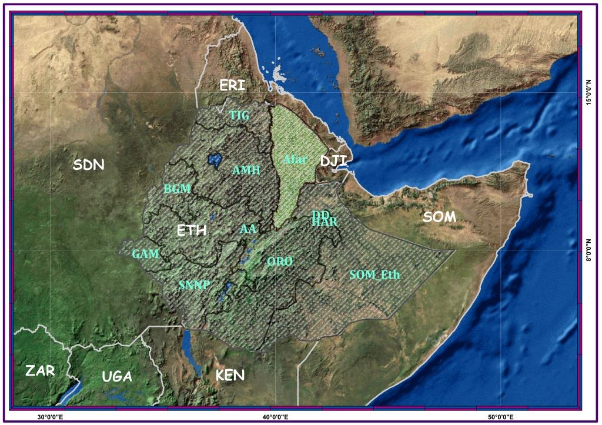

Zonal Areal Coverage in KM2

Zone 1 has the highest Area and Zone 5 has the lowest

Wereda based Areal Extent Reveals, Afdera and Elideare have the highest geographic area and Koneba and Dewe the lowest areal coverage
Afar National Regional State (NRS) makes up one of the nine administrative regional states of Ethiopia. The region has five (5) administrative zones namely: Awsi Rasu (Zone 1), Kilbeti Rasu (Zone 2), Gabi Rasu (Zone 3), Fantena Rasu (Zone 4), Hari Rasu (Zone 5) and 32 administrative weredas, including one special wereda (Argoba) and two city administration- Awash Fentale and Samara-Logia City Admin. The capital city of the region is Samara (Proclamation No. 14/2002, Article (6); CSA, 2015). The region is highly endowed with natural resources; rich history defined by independent identity and culture (MoCT, 2009a,b; Wordbank, 2016). Moreover, Afar NRS has earned worldwide recognition for being the cradle of humankind, and among various fossils found in the region were that of the oldest living specimen, known as “Lucy.” (MoCT, 2009a,b; Wordbank, 2016).
Afar Depression, Erta Ale active volcano, Awash National Park, Yangudi Rassa National Park, Aramis area, cultural games and cultural traditions of the community are the major tourist attractions of the region (Wikipedia, 2017). In addition, the region boasts abundant reserves of various major and significant minerals such as Potash, Sulfur, Salt, Bentonite, Gypsum, Mercury, Limestone, Sylvite, Albiteanorthite Series, Carnallite, Hollandite, Olivine, Pyrolusite, Romanechite (Mindat, 2017; Wikipedia, 2017; AllAfrica, 1999; Yager, 2013; Franzson et al., 2015). Furthermore, the region has good geothermal sources and potential solar energy. Only in Afar at Afar depression and in Iceland can one study mid-ocean ridge on land (Katarzyna et al., 2014). This beautiful landscape, extraordinary geological & natural phenomena, its endemic fauna & flora and the hospitality of its people make the region the best attractive destination and home for tourists, Geo-tourists, scientific researchers and others (MoCT, 2009,b). Afar NRS is located in the northeastern part of Ethiopia. The region shares national boundary with Oromiya NRS in the south, Somali NRS in the southeast, Tigray NRS in the north-west and Amhara NRS in the south-west. In addition, the region shares international boundary with Eritrea in the north-east and Djibouti in the eastern tip (Proclamation No. 14/2002, Article (2)). The region’s capital city Samara is 605KM northeast of Addis Ababa along the main asphalt road from Addis Ababa to Djibouti via Awash 7killo city with geographic coordinates between 8.83o to 14.46o east and 39.73o 42.41o north, with approximate geographic area of 99,641.51KM2 and perimeter of 1885KM. Afar NRS is an elongated flat lying ground oriented nearly south-north direction with a total length of the shape from Awash 7 wereda Awash national park kebele tip in the south to the north edge part of Dalol wereda’s Bada Admarug kebele is more than 623KM and the horizontal width of the region from western part of Yalo wereda’s Gida’alena mudalelina dirma kebele to the eastern edge of Elidaar wereda’s Digino Natenkule kebele is more than 291 KM. Based on the region’s NRS Rural land use and administration policy (2008) the regional state accounts for 8.4% of the area of Ethiopia.
Only Erebti, Teru, Kory, Gelealu, and Assayta wereda are without national and International Boundary. Others have either share regional or international boundary.
Zone 1 has the highest Area and Zone 5 has the lowest
Wereda based Areal Extent Reveals, Afdera and Elideare have the highest geographic area and Koneba and Dewe the lowest areal coverage
CSA has the power, duty and responsibilities to collect, disseminate, administer and conduct census at all level (Federal Negarit Gazeta, 1995).
CSA’s 2017 projected dataset is used to explain the demographic condition of the region.


There are minimum weather stations in the region (most of them are non-functional). Only 17 stations are class 1 and most of them are class 3&4 (68%). Class 1 Stns measures real time all weather parameters. Class 3 and 4 measures minimum weather parameters in a day. Fuka et al. (2013), weather is often monitored from location outside of the watershed.Scattered point datasets couldn’t be used to explain spatio-temporal dist. Especially for heterogeneous landscape like Afar.

Climate information from afar
Perception information of afar

Temprature information from afar

Zonal information from afar
Wind information from afar

Drought information from afar

Temprature information from afar
Evaporation information from afar
FAO AEZ information from afar
FAO AEZ information from afar
Topology information from afar
Slope information from afar
35% coarse fraction (Gravel Content) over northern parts.Southern and western border of the region has relatively more silt content (up to 30%).Pocket areas in the southern part of the region has slightly higher clay content.
The southern part of the region is dominated by clay loam texture. The central and eastern part of the region was dominated by sandy clay loam (SaCLLo) textural class Over parts of the northern tip areas, sandy loam texture. Generally, Sandy clay dominates the region. Clay loam, the second